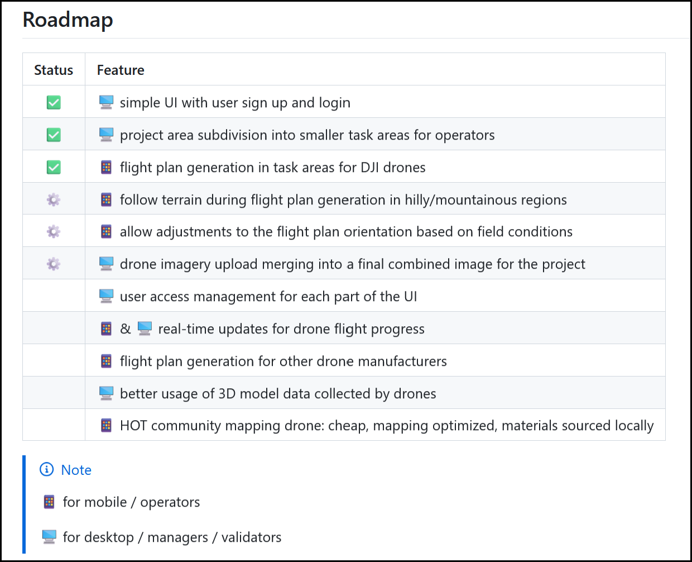
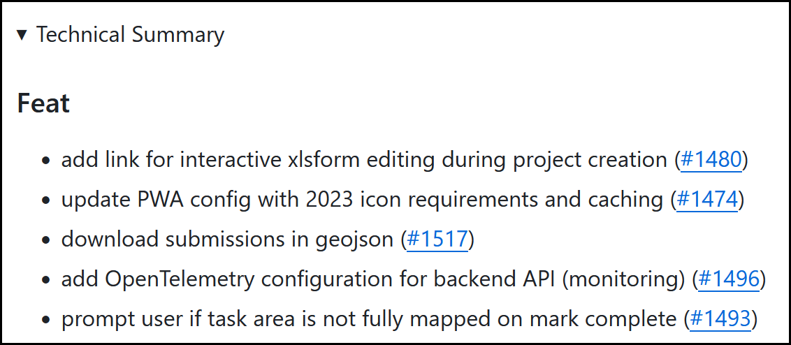

HOT's Development Practices¶
This was last updated on 12/07/2024 and details our idealised software development practices.
Open-Source Model¶
- All code developed at HOT is open-source.
- We rely heavily on community feedback to steer our development.
- Contribution from anyone is welcome.
- We follow a git-flow, or fork-and-pr model:
- Developers should create a fork of the repo they wish to modify.
- Code is added to a branch inside the fork.
- A pull request (merge request or PR) is made against the development branch of the original repository.
- Our code is generally licensed AGPLv3 unless otherwise specified.
Note
Some tools still use BSD-2-Clause: - Tasking Manager - Export Tool - Open Aerial Map
Defining What We Build¶
Gathering Requirements¶
- When a project is first conceived, we have an idea of requirements / direction.
- Over time the requirements are dynamic and interative. We have two approaches.
Translating User Requirements Into Actions¶
- Our main feedback mechanism is through user testing. This should be done in collaboration with our hubs and partners to determine: what works well, and what doesn't. The general public will also use our tools and provide feedback.
- For field-based tools (FMTM, DroneTM), this would involve running mapping campaigns and gathering feedback from the teams involved.
- For desk-based tools (everything else), we mostly gather feedback through informal channels such as Slack.
- All tools have a public channel on Slack for discussion, providing feedback, and gathering requirements.
-
Once we have gathered feedback, this should be divided up into actionable Git issues by the PO / Tech Lead and grouped into milestones or releases.
See the project management and releases sections for details about grouping tasks into themes.
Gathering Direct Technical Feedback¶
- Users that are more tech-focused can create issues directly on our Git project.
- Discussions can also be used on our Git tracker for more general user input or feedback.
- Most often this will be bug reports, which should generally be high priority for
the next release (or a hotfix to production if
criticalpriority). -
The PO / Tech Lead should triage tasks, assign priorities, and group into milestones or releases.
See the issue labels section for details about priority assignment.
Setting Priorities¶
- Generally bugs will take priority over new features, particularly those blocking the users workflow.
- Milestones for a tool will be assessed based on internal team discussion, in addition to public Slack and Git-based discussion.
- The determined priorities and milestones will be a tradeoff between:
- Original vision and goals of the tool.
- Most prominent user requests.
- Global events and crisis response (activations).
- Requirements from actively engaged stakeholders / organization.
In future, we would like to better involve the public via a technical steering commitee or similar.
Keeping Users Updated¶
Users can keep informed about ongoing tasks in various ways:
- Public announcements on Slack / blog posts on HOT's website, OSM Diaries, Dev.to, or other platforms.
- Releases on Github and included release notes.
- The user roadmap tracking progress for each repo.
- The overarching public roadmap, showing progress for projects and milestones.
- Any discussions around particular features that have not been agreed upon and translated into an issue / milestone.
Questions / Clarification¶
- HOT works fully in the open and is accountable for being clear about changes made to our tools.
-
If clarity is poor about what the vision of our tools are, features we are planning, how we work, when requirements will be met, or anything else, then we have open channels of communication:
- Via our public Slack, either in channels related to a tool, or as a private message to a member of the tech team.
- Via Github issues or discussions.
- Direct message or email to the Product Owner or Tech Lead of the tool in question.
- In the monthly 'Open Tech and Innovation Space' calls advertised on Slack.
- In future, we also hope to have something akin to a 'Technical Steering Commitee', in which any tech-facing member of the public is welcome to provide input.
Defining How We Build¶
Git Repo Management¶
Management of tasks and code via Github.
Branches¶
- Generally our repos will have three key branches:
- dev: the ongoing development to which PRs are made.
- stage: optional branch where new features pass additional testing stages prior to deployment to the main website.
- main: the code that is currently deployed to the main website.
Issues \ Features¶
Issue Tags¶
- Label / tag issues where appropriate, for example as
backendorfrontend.
- Priorities can be assigned:.
priority:critical: blocking current tasks or user workflow.priority:high: should be addressed as a priority.priority:low: backlog of tasks that will be addressed in time.
- Difficulty can be estimated (and may not be accurate):
effort:low: small task, likely a few hours.effort:medium: larger task, may take a day or two.effort:high: a broader scope task with unclear timeline.Ideally there should not be many tasks with
effort:high. If there are, consider breaking them down to smaller tasks.
- The testing status can be tracked:
testing:ready: the issue has been fixed and is ready to test.testing:fail: the issue was not fixed as intended and requires additional work from the developer.- The
testing:xxlabel can be removed when an issue is closed.Note that
testingis used as a simpler alternative to project management terminology such asquality controlorquality assurance.
- Issues marked
good first issueare approachable to newcomers in the repo.- Ideally the repo should always have a few low priority
good first issuetags to help foster open source contribution / onboarding.
- Ideally the repo should always have a few low priority
Note
To attach labels to an issue, the Github user requires at least
triage level permission for the repo.
This can be tracked at a repo level with a contributors group, including
those that have contributed regularly to include them in the development flow.
Issue Assignment¶
- Assign issues to the dev who will work on it.
- Issues can be assigned in advance if the devs is known.
- Devs can self-assign tasks.
Writing & Merging Code¶
PR = pull request, merge request, or similar terminology simply meaning to merge code!
PR Drafts¶
- Create a draft PR for works in progress.
- Push as early as possible to draft, especially if there is a chance you may get sidetracked on other work (so another dev could feasibly pick up where you left off).
PR Assignment¶
- Assign yourself if you are working on the issue.
- Assign another dev if you need to pass off the development to them.
- The re-assigned dev can then assign the task back to the original dev for validation.
PR Review¶
- Any developer can review a PR, as long as one dev reviews prior to merge.
- In addition to a sanity check, a review should ideally be a technical ideally suggesting feedback where code could be reused, best practices that should be used, etc.
- Assign devs for review - frontend can review backend and vice versa.
- Once review is complete and the PR is out of draft state, then any dev can merge.
Note
Once a PR is merged, the merged should ensure that the
testing:ready label is applied to the relevant issue, if required.
Linking Issues¶
- Issues can be linked via either:
fixed #123syntax to automatically close the issue on merge.related #123syntax to allow the Product Owner / Manager close the issue manually once they are satisfied the issue is resolved fully.
- Generally the second approach is preferred
Marking Issues As Solved¶
- Once merged, code should be deployed automatically from the
devbranch to thedevserver. - This allows for the Project Owner / Manager to thoroughly test the changes
and either close the issue, or add the
testing:failtag. - Once closed, this will be reflected on the milestone percentage, roadmap progress, and task board complete tasks.
Note
Note the distinction here between the technical code review and the the review of the solution from a user perspective via testing.
Project Management¶
We use Linear for easier project coordination, but everything is synced to public-facing tools such as Github for transparency.
- Issues:
- Track individual development tasks, two-way synced to Github to work in the open.
- Each issue should have a label
repo:repo-nameto allow for easier sorting in Linear (a small workaround to ensure we remain on the 'free' tier). - 💡 Example: Add and endpoint to list individual user contributions.
- Milestones:
- Group similar tech issues into an overall tech goal (i.e. the combined frontend, backend, devops effort).
- Milestones are not an essential part of the workflow, however, they are generally defined by the lead dev on a project to better define how to accomplish a task. Instead, 'Projects' can contain 'Issues' directly.
- 💡 Example: Add backend endpoints that provide user statistics for a dashboard.
- Projects:
- The user 'story' or user facing feature or fix. Easily understood by a non-tech audience.
- Can incorporate multiple milestones to achieve the goal.
- These are defined by the Product Owner of the tool, using the progress described above.
- 💡 Example: Create a user stats dashboard so users can easily track their overall progress.
- Initiatives:
- We use these as a tech roadmap for 'Projects' grouped per quarter.
- This allows us to track the progress of multiple features or fixes across multiple tools, for a given time chunk.
Note
To add the repo:repo-name automatically for each new issue,
we can create the following Github workflow
# We add a label `repo:repo-name` to each new issue,
# for easier tracking in external systems
name: 🏷️ Issue Label
on:
issues:
types:
- opened
jobs:
issue-label:
runs-on: ubuntu-latest
permissions:
issues: write
steps:
- run: gh issue edit "$NUMBER" --add-label "$LABELS"
env:
GH_TOKEN: ${{ secrets.GITHUB_TOKEN }}
GH_REPO: ${{ github.repository }}
NUMBER: ${{ github.event.issue.number }}
LABELS: repo:drone-tm
Also, to bulk tag existing issues in a repo, use Github CLI:
docker run --rm -it --entrypoint sh maniator/gh
gh auth login
REPO="hotosm/chatmap"
LABEL="repo:chatmap"
gh label create "${LABEL}" --repo "${REPO}" --color "#ededed"
for issue in $(gh issue list --repo "${REPO}" \
--state open --limit 1000 --json number --jq '.[].number') \
; do
gh issue edit $issue --repo "${REPO}" --add-label "${LABEL}"
done
Releases¶
- Releases are mostly dictated by the semantic versioning of a tool.
- In general, a group of 'Projects' will result in a near release being made (on approximately a monthly / bi-monthly basis).
Roadmaps¶
User Roadmap¶
- A summary of Linear 'Projects' are placed in the README of each tool on Github.
- This is a simple table, showing the 'Project', and the status:
- ✅ for done tasks
- ⚙️ for ongoing tasks
- [no emoji] for upcoming tasks
Example user roadmap (from Drone TM):

Public Roadmap¶
- We have a public roadmap linking all tools together under https://hotosm.steelsync.io/tech-roadmap
- This is made using a tool called SteelSync (paid unfortunately, but cheap), that gathers data from the Linear API and easily creates a public dashboard.
- We chose the approach to save the overhead of developing our own roadmap page using the Linear API.
Feature requests¶
- Technical users can still make issues and bug reports via each Github repo.
- For general user requests (public, or internal to HOT), we can all use the 'Request' button available on the mentioned public roadmap page above.
- Each request will create an issue in Linear. The tech team will triage and add the issue to the relevant Github code repository, then place within a project / initative with timelines.
Discussions¶
- To discuss more general topics in the public, so that anyone can contribute.
- Partly used to document the design decisions we have taken.
- Tag people specially for input, as it makes them more likely to add ideas.
- We can also use these for the staging server tests on each release cycle, e.g. https://github.com/hotosm/field-tm/discussions/1335
Release Notes¶
- No technical details, move those to a dropdown in markdown:
Example:
```md
<details>
<summary>Technical Summary</summary>
* Add healthcare form category & minor fixes by @spwoodcock in https://github.com/hotosm/field-tm/pull/1555
* Fix/requested page redirection by @NSUWAL123 in https://github.com/hotosm/field-tm/pull/1559
* Test coverage for update project route by @azharcodeit in https://github.com/hotosm/field-tm/pull/1557
</details>
```

- Higher level info on bugs fixed, new features added, things improved.
- Add screenshots throughout.
Deployment Flow¶
These stages go in order, from local development, through to production deployment.
Local Development¶
- Devs develop features on their local instance.
- Use
docker-compose.ymlsetup for testing. - Once feature and testing complete, make a PR to the
devbranch.
Development Deployment¶
- Once a PR is approved, it is merged to
dev. - This triggers a workflow to automatically deploy the code changes on the dev server.
- The purpose of this stage is for:
- Fast CI, i.e. the developer sees their code in action quickly.
- Easy QA tests by the project manager on the dev server.
Staging Deployment¶
- The purpose of this step is to regularly release versions of the software that
power users (and the project owners) can test.
- Anyone who doesn't mind occasional breakage is welcome to use this server publicly.
- At a set interval (approx bi-weekly), the updates made on
devare merged intostagingfor feature stabilisation.- This can be done via PR, although sometimes there may be merge conflicts to resolve.
- Alternatively, the branch can be reset to the latest
devand built upon:git reset --hard origin/dev
- Once merged, the functionality is thoroughly tested and patched (if required).
- Patches can either me made on
devand merged intostaging. - Or be made directly to
stagingif there branches have diverged significantly.
- Patches can either me made on
- Once approved, the
stagingbranch auto-deploys to the staging server.
Production Deployment¶
- The staging server instance is thoroughly tested by the product owner, and bug reports filed.
- The release is hardened into longer interval (approx bi-monthly) production releases.
- A PR is made from
stagingtomainbranch. - Once approved and the code merged, a Github release is made.
- A release is available on Github, including all relevant release notes for what has been updated.
- The release will trigger the workflow to deploy to the production server.
Hotfixes¶
- If an issue is found after a production release is made, a hotfix can be used to patch the production code.
- There are two methods to do this:
- If the
devandmainbranches have diverged significantly, the hotfix can be made as a PR directly tomain, then reconciled later withdev. - Otherwise, the fix can be made as a PR to
dev, thencherry-pickedupstream throughstagingthen tomain.
- If the
Security Vulnerabilities¶
- Vulnerabilities in software are an inevitability and may be reported by users, developers, or automated CI tools.
- They will typically be referenced by a Common Vulnerabilities and Exposures
(CVE) reference ID, which can be looked up in various CVE tracking websites. - Once a vulnerability is reported and verified, actions can be taken:
- System dependencies: generally updating a container image version, or rebuilding the image should fix these, as vendors update regularly.
- Package dependencies: an issue in your bundled sub-dependencies may be fixed by updating the package version to the latest. CVEs are generally fixed quickly by the package maintainer.
- In our repo code: these may be picked up by static and dynamic code scanners and are generally fixed as part of the pre-commit or PR review process (CI workflows).
- Fixes should be pushed through to production as soon as possible, as a
hotfixbranch including the updated image/package version or code.
Other: Feature Demo Releases¶
- A feature demo release is a throwaway instance of the tool with a particular purpose.
- Functionality is developed here for various reasons:
- Specific updates for a single project that won't be used elsewhere.
- Very fast updating of the server, without interfering with the typical release flow.
- The key point is that these branch instances are single use and will be shut down once the project has ended.
- The easiest approach is probably to:
- Create and login to a server.
- Clone the repo and checkout to the feature branch
feature-demo/some-feature. - Run the commands to build and run the tool.
- Alternatively, a workflow can be made to auto-deploy:
- Triggering on a branch naming convention:
feature-demo/some-feature. - The user will have to enter an SSH key into the Gitlab secrets.
- The workflow will deploy to the server remotely when the branch is pushed to.
- This approach is less preferred, as the user requires write access to the Github repo.
- Triggering on a branch naming convention: